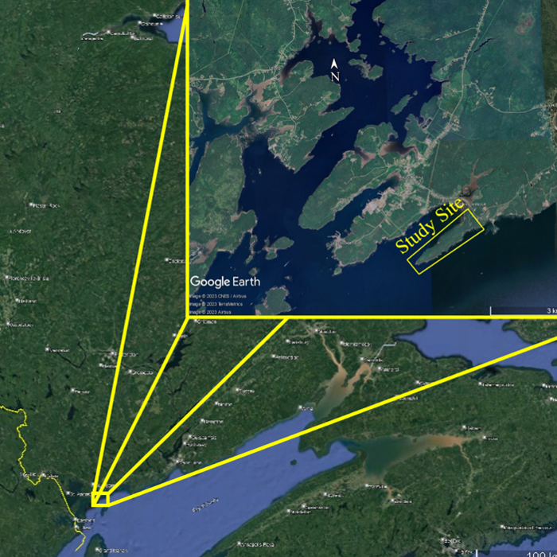

At Living Laboratory, our mission is to illuminate the profound significance of the Bay of Fundy by examining its ecosystem through a lens that encompasses the diverse array of species inhabiting and interacting within this vital marine environment. We are dedicated to fostering a deep understanding of the Bay's ecological complexities, advocating for all species preservation.

In the Anthropocene era, our growing impact on the environment raises crucial questions about the fate of countless species. As we navigate this era of human influence, it's imperative to understand how these species are responding and adapting to the challenges posed by our actions. This is the focal point of our mission: to identify, study, and provide assistance to the diverse array of species affected by our presence.
Our commitment begins with the protection and utilization of our property in Blacks Harbour, a rural community of Eastern Charlotte, New Brunswick, Canada. The pristine 100+ acre peninsula boasts 2 1/2 miles of ocean-front shoreline, extending into the Bay of Fundy. This expansive site serves as the canvas for our initial study—a pivotal step towards establishing a Living Laboratory.
Through rigorous investigation and collaboration, we aim to unravel the intricate dynamics of species adaptation within this unique ecosystem. By leveraging our resources and expertise, we aspire to not only uncover the challenges faced by these species but also to devise effective strategies for their conservation and resilience. Together, we strive to make a meaningful difference in the lives of all beings that call this ecosystem home.